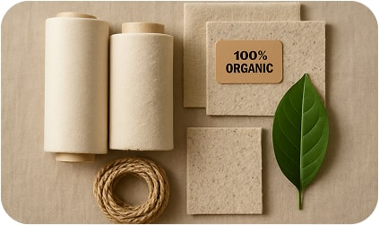
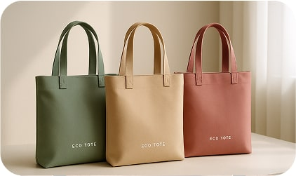

Ми використовуємо органічну бавовну, перероблений пластик, льон та
коноплі для наших сумок.
Переваги
Чому обрати нас?
Наші сумки виготовлені з екологічно чистих матеріалів, що
забезпечують стійкість і довговічність. Обираючи EcoTote, ви
підтримуєте екологічну відповідальність.

Стійкість та екологічність
Виготовлені з органічної бавовни та переробленого пластику.
Міцність і довговічність
Наші сумки мають посилені шви для тривалого використання.

Стильний та сучасний дизайн
Мінімалістичні моделі в обмежених серіях для кожного стилю.